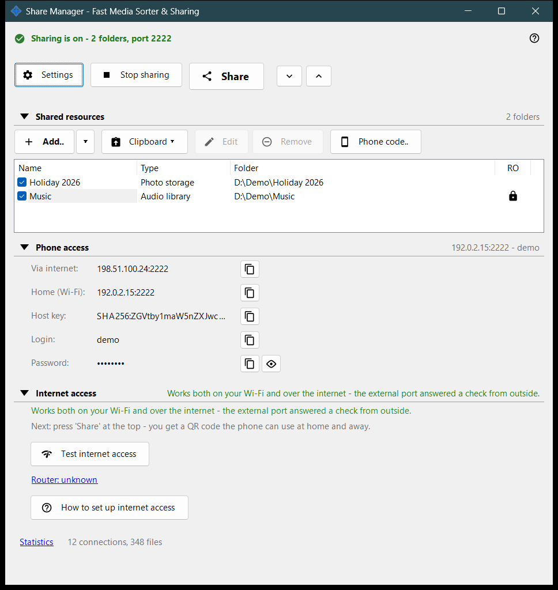
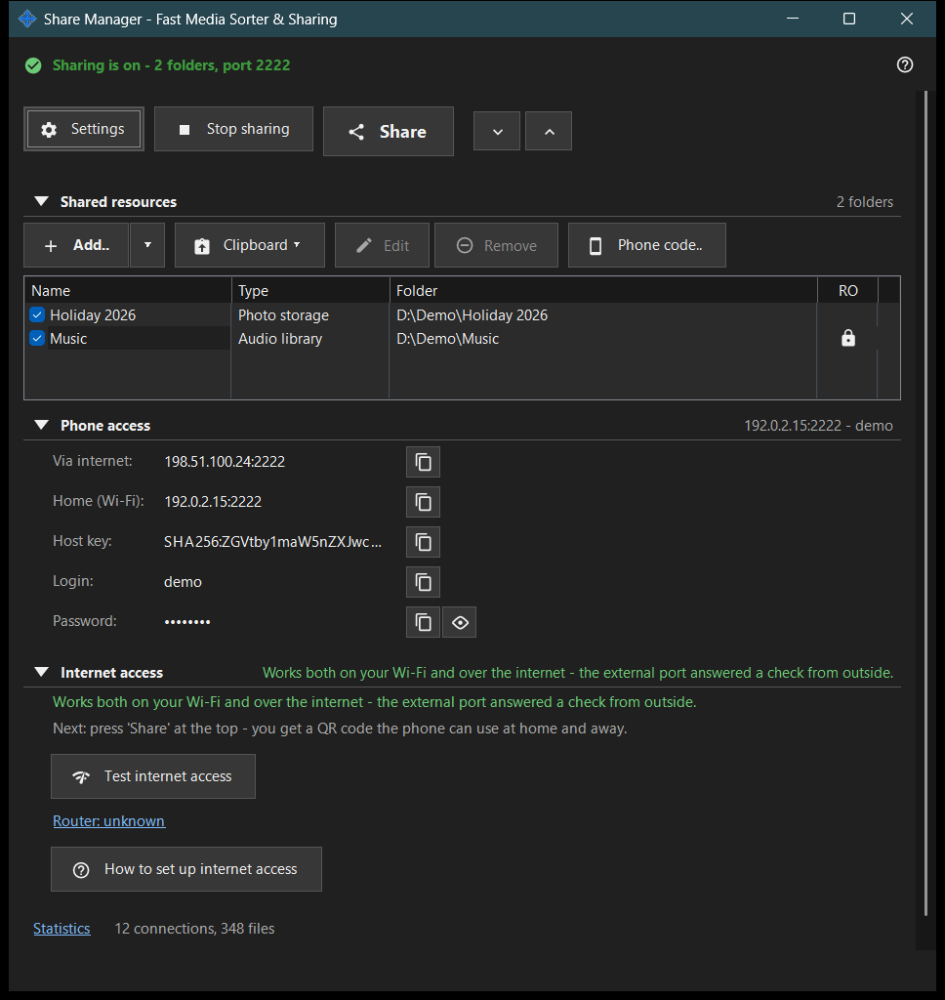

Share Manager - Fast Media Sorter & Sharing
What this is for
The main window of the Share Manager, the local sharing and scheduling service. It lists the folders this PC shares with a phone over SFTP, starts and stops the sharing, hands out the access code and shows how the phone can reach the PC. Scheduled file operations and the exchange account have their pages in the Manager settings. It opens from the viewer or from the tray icon; closing the window leaves the app in the tray.


In this order
- Press 'Add..' and choose 'Folder..' to put a folder in the list.
- Tick the folder: ticked folders are the ones that are served.
- Press 'Start sharing' (it needs at least one ticked folder).
- Press 'Share' to get the QR code or the .fmscfg file for the phone.
- For access from outside your home network open the 'Internet access' group and use its two buttons.
- Press 'Stop sharing' when you are done.
The elements
Top row
'Settings' opens the manager settings. 'Start sharing' turns into 'Stop sharing' while the server runs. 'Share' opens the access-code wizard and works only while sharing is on; otherwise the hint says to start the server first. 'Expand all' and 'Collapse all' open or close the groups below.
Shared resources
One row per resource with a check box and the columns Name, Type and Folder. A ticked row is served to phones; an empty list shows 'Add your first resource..'. Unticking the last ticked folder asks whether to stop sharing, because connected phones are disconnected. Start sharing with nothing ticked only shows the hint 'Add a folder and tick it first.'.
Phone access
The connection data a phone or any SFTP client needs: the address over the internet and at home (Wi-Fi), IPv6, the host key, the login and the password. 'Show password' reveals it and 'Hide password' covers it again. The text under the group explains whether the phone reaches the PC at home only or also from outside.
Internet access
'Test internet access' opens the Internet access test window. 'How to set up internet access' opens the router guide. The 'Router: ..' link opens the router's own page; it reads 'Router: unknown' when none was found. The group carries a warning: anyone who learns the address, login and password can reach every shared folder, so do not publish the QR code or the .fmscfg file and switch sharing off when finished.
Statistics
Under the groups a 'Statistics' link sits next to a short summary such as 'N connections, M files'. The link opens the Sharing status window with the full counters.
When server features are off
Until the server component is enabled the window shows 'Server features are off' and the button 'Enable server features..', which opens the Enable folder sharing window. If the sharing component is missing from the installation, the window says so and asks to reinstall the app.
Manager settings · SFTP sharing settings · Exchange server settings